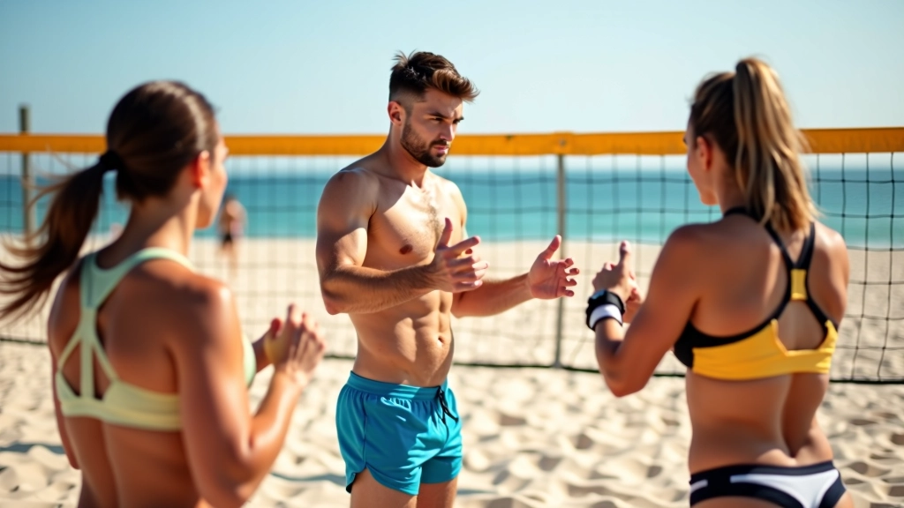
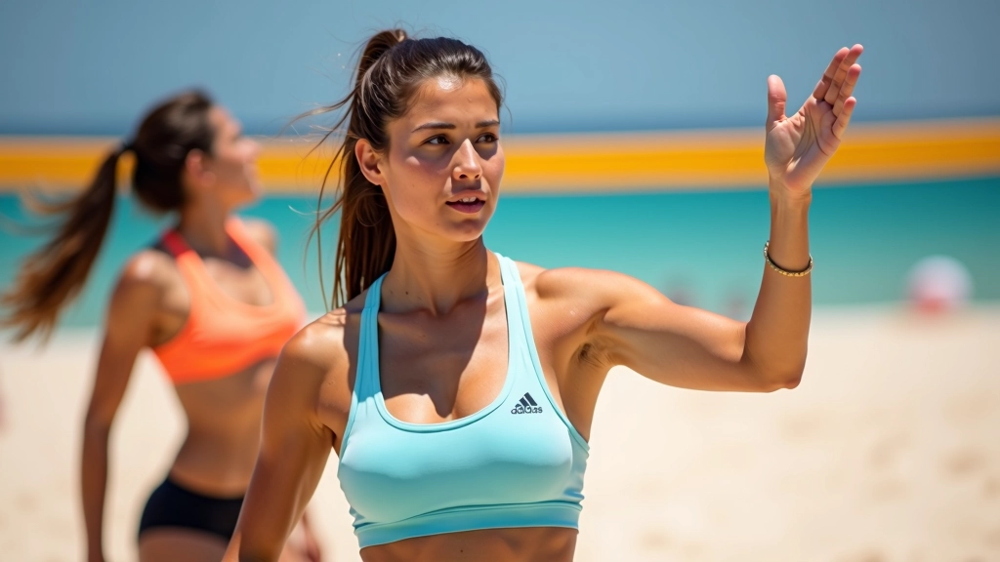
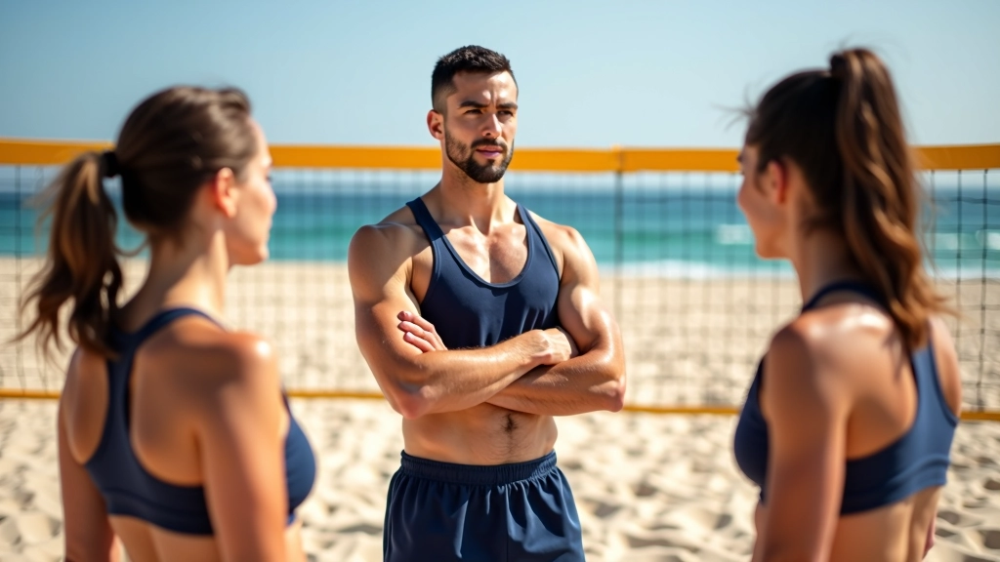
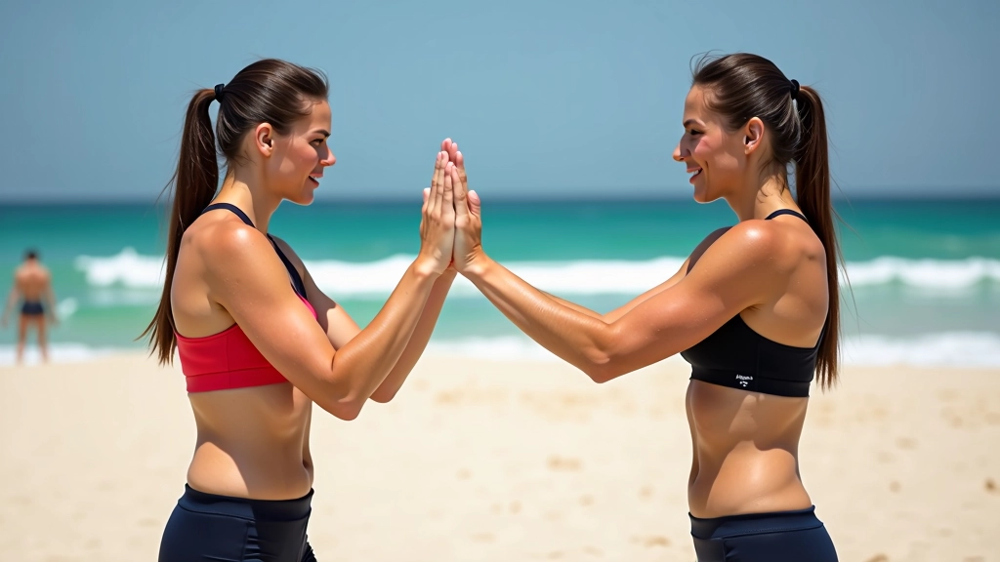
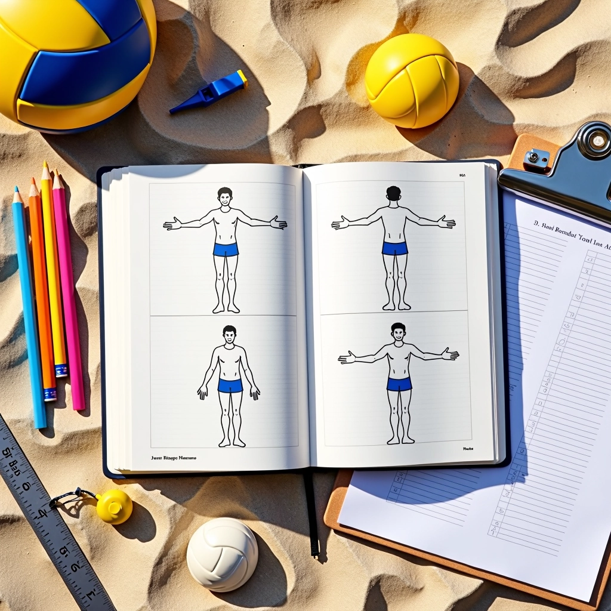
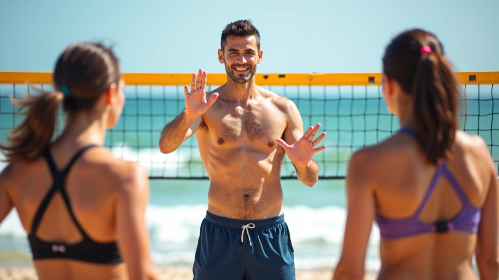
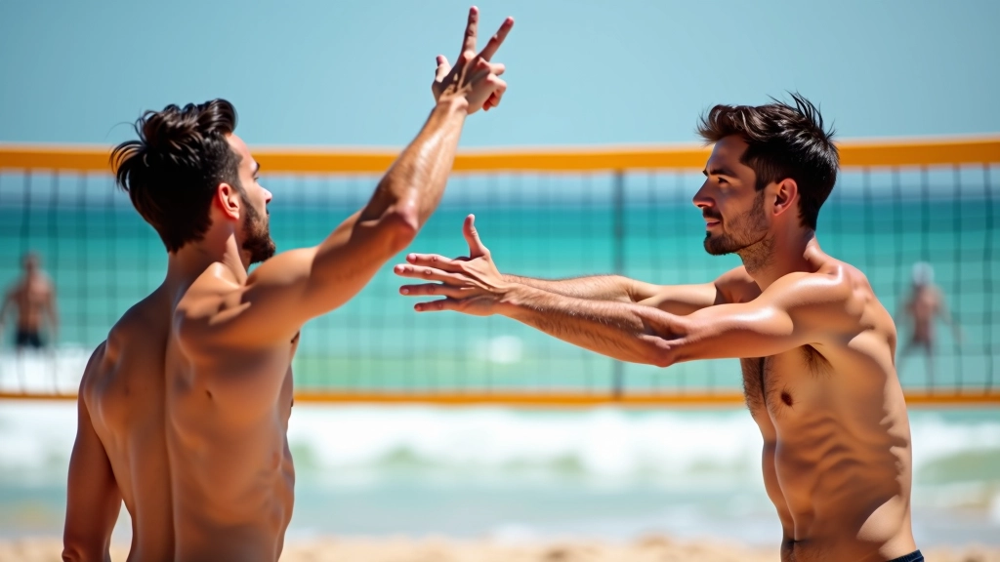

الإشارات الأساسية للمبتدئين
الإشارات الخمس الأساسية التي يحتاج كل لاعب جديد إلى تعلمها قبل الدخول إلى الملعب...
تمارين فعّالة لتطوير سرعة استجابتك للإشارات وتحسين التنسيق الفريقي تحت الضغط

الإشارات ليست مجرد حركات تعلمتها في التمرين الأول. الفرق الحقيقية تحتاج إلى لاعبين يستطيعون قراءة الإشارات والاستجابة لها في ثانية واحدة، حتى عندما يكون الشمس في عينيك أو عندما تكون متعباً بعد خمس نقاط متتالية.
في هذا الجزء، سنركز على التمارين العملية التي تطورها سرعة الاستجابة والتنسيق مع زملائك. لا نتحدث عن النظرية — نحن نتحدث عن الحركات التي تحدث فرقاً على الملعب.
ابدأ بتمارين بسيطة تركز على سرعة قراءة الإشارات. لا تحتاج إلى ملعب كامل — مساحة صغيرة كافية.
التمرين الأول: اقف أمام شريكك على مسافة ثلاثة أمتار. يرفع يده ويظهر إشارة محددة (مثل الهجوم المسطح أو الضربة العميقة). عليك أن تسمي الإشارة بسرعة. ركز على الدقة أولاً — السرعة تأتي بعدها. جرّب 20 إشارة متتالية، وعد كم إشارة حصلت عليها صحيحة.
الخطوة التالية: أضف حركة. شريكك لا يقف ساكناً — يتحرك بخطوات جانبية أثناء إظهار الإشارات. هذا أقرب إلى الحالة الحقيقية في الملعب. ستلاحظ أن السرعة تنخفض في البداية — هذا طبيعي. استمر لمدة أسبوع وستشعر بالفرق.

هذه التمارين موجهة للتعليم والتطوير العملي للمهارات. قبل بدء أي برنامج تدريبي جديد، تأكد من أنك بحالة بدنية جيدة. إذا كنت تعاني من أي إصابات أو مشاكل صحية، استشر متخصصاً قبل البدء. التمارين يجب أن تتم بأسلوب آمن وتحت إشراف مدرب ذو خبرة.

هذا هو المستوى الثاني. لا يكفي أن تقرأ الإشارة وأنت هادئ — عليك أن تستجيب بسرعة حتى عندما تكون متعباً أو مشتت الانتباه.
التمرين: لعب نقطة سريعة قبل الإشارة. انتظر حتى تشعر أن قلبك ينبض بسرعة، ثم يرفع مدربك إشارة. لديك ثانية واحدة فقط للاستجابة. هذا يحاكي ما يحدث في الملعب الحقيقي. كرر هذا 10 مرات متتالية. بعد أسبوعين، ستلاحظ أن قراءة الإشارات أصبحت تلقائية حتى تحت الضغط.
المفتاح هنا هو عدم الاستسلام عندما تجد نفسك تخطئ. كل خطأ هو درس. المدربون الأفضل يركزون على الأخطاء أكثر من النجاحات، لأن الأخطاء هي حيث يحدث التعلم الحقيقي.
الإشارات ليست مفيدة إذا لم يفهمها جميع أعضاء الفريق بنفس الطريقة. التمارين الفريقية ضرورية لبناء ثقة وتنسيق حقيقي.
تمرين بسيط: قف مع فريقك الكامل في خط واحد. يرفع الآلية (أو المدرب) إشارة واحدة. جميع اللاعبين يجب أن يستجيبوا بنفس الحركة في نفس الوقت. هذا يعلمك أن تنظر إلى الإشارة في محيطك الجانبي، وليس فقط أمامك مباشرة. كرر هذا مع إشارات مختلفة لمدة 15 دقيقة في كل تمرين. ستشعر بأن الفريق يصبح متزامناً أكثر مع الوقت.
"الفريق الذي يستجيب معاً يفوز معاً. الإشارات هي لغة الفريق، والتمارين هي طريقة تعلم هذه اللغة."
— مدرب كرة طائرة شاطئية متقاعد

كيف تعرف أنك تتقدم؟ البسيط — قس أدائك. ليس بطريقة معقدة. جرب هذا: احتفظ بدفتر بسيط وسجل عدد الإشارات الصحيحة من أصل 20 في كل جلسة. بعد أربعة أسابيع، قارن الأرقام. إذا بدأت بـ 14 من 20 وانتهيت بـ 18 من 20، فأنت تتقدم.
هناك طريقة أخرى: قس الوقت. كم ثانية تستغرق للاستجابة لإشارة معينة؟ في البداية قد تستغرق 2-3 ثوان. مع الممارسة، ستنخفض إلى 0.5 ثانية أو أقل. هذا يعني أن قراءة الإشارات أصبحت حدسياً، وليس حسابياً.
الأهم من كل شيء: لا تقارن نفسك بأحد آخر. قارن نفسك بنسختك من أمس. التقدم الصغير هو نصر حقيقي في كرة الطائرة الشاطئية.
التمارين التي قرأتها هنا ليست نظرية. هي طرق مثبتة يستخدمها لاعبو كرة الطائرة الشاطئية في جميع أنحاء العالم لتحسين مهاراتهم. الفرق الوحيد بينك وبينهم هو أنهم بدأوا.
لا تحتاج إلى مدرب غالي الثمن. لا تحتاج إلى ملعب احترافي. كل ما تحتاجه هو شريك وتصميم على التحسن. ابدأ بتمرين واحد غداً. فقط واحد. وعد نفسك أنك ستكمل. بعد أسبوعين، ستشعر بالفرق.
كرة الطائرة الشاطئية هي رياضة جميلة. والإشارات هي قلبها. والممارسة هي الطريقة الوحيدة لإتقانها.

فريق تحريري
كتبه فريق إشارات الشاطئ التحريري، متخصص في تقديم إرشادات عملية وسهلة المتابعة.
الإشارات الخمس الأساسية التي يحتاج كل لاعب جديد إلى تعلمها قبل الدخول إلى الملعب...

كيفية استخدام الإشارات للتنسيق بين الدفاعين. تعلم كيف تغطي مناطقك وتحمي شريكك من...

إشارات معقدة تستخدمها الفرق المتقدمة للتنسيق بين الهجوم والدفاع. تتضمن تغييرات ت...